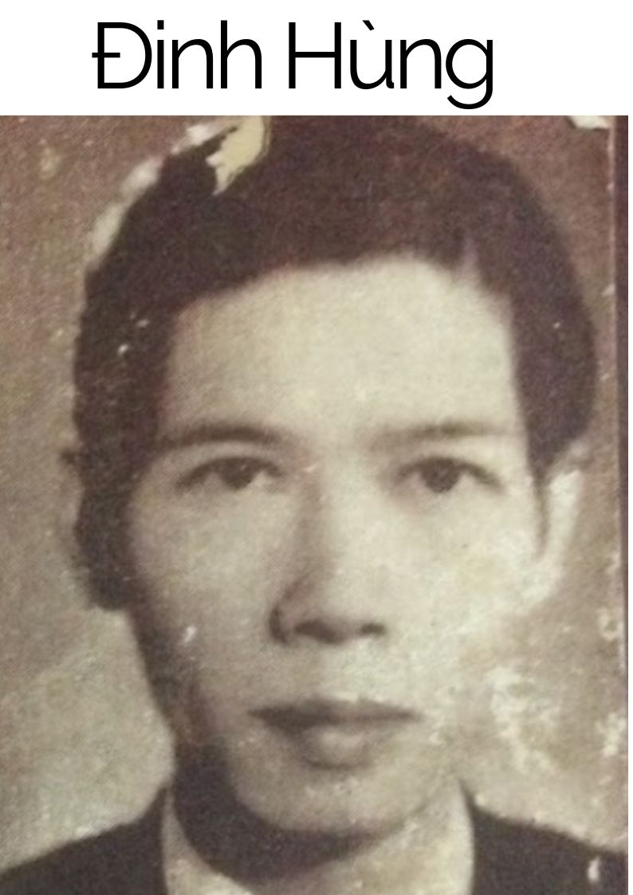

Quyển ‘‘Đốt Lò Hương Cũ’’ được xem là sáng tác cuối cùng của cố thi sĩ Đinh Hùng, ông đã viết quyển nầy để tưởng niệm những văn, thi sĩ mà ông quen biết trong suốt thời gian lăn lộn trong nghiệp thi văn. Những Tản Đà, Thạch Lam, Bích Khê..v..v.. đều được ông nhắc nhở trong những trang sách nầy, và đâu đâu cũng báng bạc lời tiếc thương những người đã khuất, những người mà ông cho là ‘‘không bao giờ chết’’, vì họ chết đi nhưng vẫn sống trong lòng độc giả,vẫn sống trong tâm tư những thi, văn sĩ còn sống.

Điều mà cố thi sĩ Đinh Hùng không hề nghĩ tới là quyển sách của ông qua đời những người đã chết lại không được xuất bản trước khi ông qua đời. Ông nhắm mắt lìa đời trước khi thấy được những tiếc thương những người bạn không còn trên cõi thế đến tận tay độc giả để cùng ông ‘‘ Đốt Lò Hương Cũ’’ tưởng nhớ người xưa.
Một số những kỷ niệm trong ‘‘Đốt Lò Hương Cũ’’ này tuy đã được ông đọc trên Đài Phát Thanh hoặc đăng trên một vài tạp chí, nhưng sau đó đã được ông sửa chữa lại và dự định xuất bản. Nhưng sách chưa ra thì ông đã mất ngày 24-8-1967 tại Saigon.
Chúng ta hãy đọc một đoạn văn sau đây của cố thi sĩ Đinh Hùng nói về ‘‘những người không bao giờ chết’’ ấy:
‘‘ Đó là những người không còn sống trong cuộc đời thực tại, nhưng vinh viễn sống trong thế giới của linh hồn, sống trường cửu trong cõi không hư vô cùng tận, và sống vĩnh viễn trong lòng chúng ta.
Đó là những người đã chính thức lìa bỏ cõi trần để lặng lẽ nhập vào cõi ‘‘âm huyền mờ mịt’’ - nói theo Nguyễn Du, tác giả ‘‘Văn Tế Thập Loại Chúng sinh’’. Những người đó hoặc mới qua đời năm ngoái, năm kia, hoặc đã khuất bóng từ lâu- cách đây mươi lăm năm, hoặc nhiều hơn nữa- nhưng tôi không muốn gọi họ là ‘‘những người đã chết’’ mà trái lại, tôi nghĩ rằng: chính khi lìa trần mới là lúc họ tìm thấy cuộc sống bất diệt. Tôi vẫn mặc nhiên coi họ là ‘‘những người không bao giờ chết’’.
Và chúng tôi cũng tin rằng cố thi sĩ Đinh Hùng là một trong ‘‘những người không bao giờ chết’’ ấy.
LỬA THIÊNG 1971